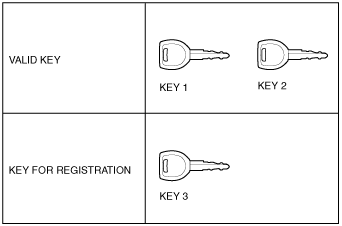
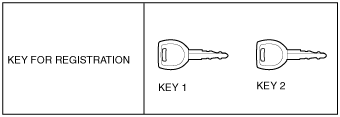
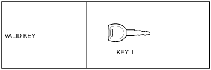

Workshop Manual ➭ BODY & ACCESSORIES ➭ SECURITY AND LOCKS ➭ IMMOBILIZER SYSTEM COMPONENT REPLACEMENT/KEY ADDITION AND CLEARING [WITHOUT ADVANCED KEYLESS SYSTEM]
IMMOBILIZER SYSTEM COMPONENT REPLACEMENT/KEY ADDITION AND CLEARING [WITHOUT ADVANCED KEYLESS SYSTEM]
id0914008050b6
• When performing the following procedures, the immobilizer resetting procedure using the M-MDS must also always be performed: “instrument cluster replacement”, “PCM replacement”, “instrument cluster and PCM joint replacement”, “Key ID number clearing”. The engine will not start unless all work is performed using the M-MDS.
• There are two methods for registering an additional key: Using the M-MDS and using two keys that are able to start the engine.
• When replacing any of the immobilizer system component parts, adding/erasing keys or performing other functions, refer to the following table and perform the applicable procedure (No.1 to 7).
|
Reference number |
Situation |
Required items |
Cautionary notes |
|---|---|---|---|
|
1 |
Making a spare key when the customer has two or more keys that can start the engine. Or registering an additional key. |
• Registration key |
• If the additional key registration method has been changed to “Customer spare key programming disabled” (inhibiting the method that uses two keys that are able to start the engine), the M-MDS is required when registering the additional key. In that case, perform procedure No.2. |
|
2 |
Making a spare key when the customer has one key that can start the engine or no keys. Or registering an additional key. |
• Registration key • M-MDS |
- |
|
3 |
Clearing previously registered key ID numbers. |
• Registration keys (two or more) • M-MDS |
• All the key ID numbers registered in the vehicle will be cleared. • Unless keys are re-registered after clearing the key ID numbers, the engine cannot be started. Before beginning the procedure, verify that the customer has turned in all of the keys for the vehicle. • Unless two or more keys are registered after replacement, the engine cannot be started. • The keys (two or more keys) readied before beginning the procedure do not have to be new keys. Any key that is capable of starting the engine before beginning the procedure can be used. |
|
3 |
Replace all the keys. (Key cylinder replacement) |
• Registration keys (two or more) • M-MDS |
• When replacing the key cylinder, have two or more keys ready for registration before beginning the procedure, since the previous keys will be invalid. |
|
4 |
Changing the method for registering additional keys. (Method for registering other keys using two keys that can start the engine is disabled.) |
• M-MDS |
• After performing this procedure it is not possible to register additional keys according to procedure No.1. The system can be returned to the original setting. The M-MDS must always be used to change the system setting. |
|
4 |
Changing the method for registering additional keys. (Method for registering other keys using two keys that can start the engine is enabled.) |
• M-MDS |
• This is the default setting on new vehicles. |
|
5 |
Replacing the instrument cluster only. |
• New instrument cluster • Registration keys (two or more) • M-MDS |
• Unless keys are registered after replacing the steering lock, the engine cannot be started. Before beginning the procedure, verify that the customer has turned in all of the keys for the vehicle. • Unless two or more keys are registered after replacement, the engine cannot be started. • The keys (two or more keys) readied before beginning the procedure do not have to be new keys. Any key that is capable of starting the engine before beginning the procedure can be used. |
|
6 |
Replacing the PCM only. |
• New PCM • M-MDS |
- |
|
7 |
Replacing the PCM and instrument cluster at the same time. |
• New PCM • New instrument cluster • Registration keys (two or more) • M-MDS |
• Unless keys are registered after replacing the steering lock, the engine cannot be started. Before beginning the procedure, verify that the customer has turned in all of the keys for the vehicle. • Unless two or more keys are registered after replacement, the engine cannot be started. • The keys (two or more keys) readied before beginning the procedure do not have to be new keys. Any key that is capable of starting the engine before beginning the procedure can be used. |
|
- |
Replacing the coil antenna. |
• New coil antenna |
• It is not necessary to reset the immobilizer system. |
Caution• If any of the following items are touching or near the key head, signal communication between the key and vehicle is negatively affected, resulting in the engine not starting or the key registration failure. Do not perform the procedure if any of the following items are touching or near the key head.
― Any metallic object
― Spare keys or keys for other vehicles equipped with an immobilizer system
― Any electronic device, or any credit or other cards with magnetic strips
|
|
 amxzzw00002562
amxzzw00002562Note• Within the following procedures, the term a “valid key” means a “key that can start the engine”.
• After adding/registering keys, clearing ID numbers or replacing any component part of the immobilizer system, verify that all keys can start the engine within 5 s.
• When verifying that the keys can start the engine, wait at least 5 s or more between inserting them.
• If the engine cannot be started using a registered key, repeat the procedure from the beginning.
• Do not start the engine until the key registration procedure for all the necessary keys is completed. If the engine is started during the registration procedure, registration is stopped at that point. Repeat the procedure starting from the beginning if the engine is started before completion.
• Two or more key ID numbers must be registered for the engine to start.
• A maximum of eight key ID numbers can be registered for one vehicle. The M-MDS can be used to verify the number of key ID numbers registered to a single vehicle.
• Do not select screen menus of the M-MDS that are not indicated within the procedures.
No.1 Additional Key Registration Procedure (Using Two Valid Keys)
Conditions
• Customer has two or more valid keys.
Note• A maximum of eight keys can be registered for any one vehicle. If key registration is not successful and DTC 15 appears even though the procedure was performed properly, use the PID/data monitor function of the M-MDS and verify the number of keys that have been registered.
• If eight keys have already been registered, and it is necessary to register other keys, the previously registered key ID numbers must first be cleared. To clear the key ID numbers, refer to “No.3 Key Replacement Procedure (Clearing Previously Registered Key ID Numbers, Key Re-registration)”.
|
 amxzzw00002563 |
1. Have one key (key 3) ready for registration.
2. Using key 1, turn the ignition switch to the ON position.
3. Verify that the security light illuminates for approx. 3 s and then goes out.
4. Using key 1, turn the ignition switch to the LOCK position within approx. 4 s after the security light goes out.
5. Remove key 1.
6. Repeat Steps 2—5 using key 2.
7. Repeat Steps 2—5 using key 3.
8. If additional keys need to be registered, repeat Steps 2—7 in the same manner as key 3.
No.2 Additional Key Registration Procedure (Using the M-MDS)
Conditions
• Customer has only one valid key. Or customer has no valid keys. (Can also be performed even if there are two or more valid keys)
Note• A maximum of eight keys can be registered for any one vehicle. If key registration is not successful and DTC 15 appears even though the procedure was performed properly, use the PID/data monitor function of the M-MDS and verify the number of keys that have been registered.
• If eight keys have already been registered, and it is necessary to register other keys, the previously registered key ID numbers must first be cleared. To clear the key ID numbers, refer to “No.3 Key Replacement Procedure (Clearing Previously Registered Key ID Numbers, Key Re-registration)”.
1. Have one key (key 1) ready for registration.
2. Connect the M-MDS to the DLC-2.
3. Using key 1, turn the ignition switch to the ON position.
Note• Although the security light flashes and DTC 15 is displayed, this does not indicate an improper procedure. Continue to perform the procedure as indicated.
4. Select “Body/Security/PATS Function” from the M-MDS screen menu.
5. Select “Program Additional Ignition Key” from the M-MDS screen menu.
6. Perform security access as indicated on the M-MDS screen. (See No.8 Security Access Procedure.)
Note• After selecting the above menu, “This operation has been successful” is displayed. At this point, the key that turned the ignition switch to the ON position is completely programmed.
• In this procedure, the necessary number of the keys are completely programmed. To finish the additional key programming, go to 10.
• If additional keys need to be programmed, go to the next step.
7. After verifying that the PATS function menu is displayed again on the M-MDS screen, turn the ignition switch to the LOCK position and remove key 1.
8. Using the additional key to be programmed, turn the ignition switch to the ON position.
9. Return to the Step 5.
10. After verifying that the PATS function menu is displayed again on the M-MDS screen, select the “Exit (From This Menu)” to finish the M-MDS procedure.
11. After Step 10, wait 5 s or more and then turn the ignition switch to the LOCK position.
12. Disconnect the M-MDS from the DLC-2.
13. Verify that the all keys can start the engine for 5 s or more after the procedure.
No.3 Key Replacement Procedure (Clearing Previously Registered Key ID Numbers, Key Re-registration)
Conditions
• Have two or more keys to be programmed after the key ID number clearing.
|
 amxzzw00002564 |
1. Have two or more keys (key 1, key 2) ready for registration after the clearing the key ID numbers.
2. Connect the M-MDS to the DLC-2.
3. Using key 1, turn the ignition switch to the ON position.
Note• Although the security light flashes and DTC 15 is displayed, this does not indicate an improper procedure. Continue to perform the procedure as indicated.
4. Select “Body/Security/PATS Function” from the M-MDS screen menu.
5. Select “Ignition key Code Erase” from the M-MDS screen menu and perform the tasks according to the M-MDS screen.
6. Perform security access as indicated on the M-MDS screen. (See No.8 Security Access Procedure.)
7. After verifying that the PATS function menu is displayed again on the M-MDS screen, select “Exit (From This Menu)” to finish the M-MDS procedure.
8. After Step 7, wait 5 s or more and then turn the ignition switch to the LOCK position using key 1.
9. Using key 1, turn the ignition switch to the ON position.
Note• Although the security light remains illuminated and DTC 21 is displayed after approx. 1 min, this does not indicate an improper procedure. Continue to perform the procedure as indicated.
10. After Step 9, wait 3 s or more and turn the ignition switch to the LOCK position, remove key 1.
11. Using key 2, turn the ignition switch to the ON position.
12. Verify that the security light illuminates for approx. 3 s and then turns off.
13. After verifying that the security light turns off, turn the ignition switch to the LOCK position and remove key 2.
14. If programming one more keys, repeat Steps 11 to 13 with a key to be programmed as key 3. Steps 11 to 13 must be performed within 1 min for each key. If the vehicle is left with the ignition switch in the ON position for 1 min or more, additional key programming according to Steps 11 to 13 is disabled. If this occurs, refer to”No.1 Additional Key Registration Procedure (Using Two Valid Keys)” to register any additional keys.
15. Verify that the all keys can start the engine for 5 s or more after the procedure.
No.4 Changing the Method for Registering Additional Keys
Note• This procedure is for changing the enable/disable setting of the “No.1 Additional Key Registration Procedure (Using Two Valid Keys)”.
• The default setting for new vehicles and new instrument cluster replacement is “Enabled”.
• By disabling the “No.1 Additional Key Registration Procedure (Using Two Valid Keys)”, only the M-MDS can be used to register additional keys, thereby preventing two valid keys from being used to create an unauthorized spare key. This function is for use by rental car or other companies with vehicle fleets.
1. Connect the M-MDS to the DLC-2.
2. Using any key, turn the ignition switch to the ON position. (Either a valid or an unregistered key can be used.)
Note• When using an unregistered key, although the security light flashes and DTC 15 is displayed, this does not indicate an improper procedure. Continue to perform the procedure as indicated.
3. Select “Body/Security/PATS Function” from the M-MDS screen menu.
4. Select either “Customer Spare Key Programming Enable” or “Customer Spare Key Programming Disable” from the M-MDS screen menu. Depending on the selected menu, the additional key registration method is as shown below:
|
Setting |
Additional key registration method |
|
|---|---|---|
|
Procedure using two valid keys |
Procedure using the M-MDS |
|
|
Customer Spare Key Programming Enable |
x |
x |
|
Customer Spare Key Programming Disable |
- |
x |
x :Procedure is possible
- :Procedure is not possible
5. Perform security access as indicated on the M-MDS screen. (See No.8 Security Access Procedure.)
6. After verifying that the PATS function menu is displayed again on the M-MDS screen, select “Exit” to complete the M-MDS function.
7. After Step 6, wait 10 s or more and then turn the ignition switch to the LOCK position.
No.5 Resetting Procedure for the Immobilizer System when Replacing the Instrument Cluster Replacement
Conditions
• Have two or more keys to be programmed after the key ID number clearing.
Caution• Before starting Step 1, complete the procedure for the instrument cluster replacement.
|
amxzzw00002564 |
1. Have two or more keys (key 1, key 2) ready for registration.
2. Connect the M-MDS to the DLC-2.
3. Using key 1, turn the ignition switch to the ON position.
Note• Although the security light flashes and DTC 15 is displayed, this does not indicate an improper procedure. Continue to perform the procedure as indicated.
4. Select “Body/Security/PATS Function” from the M-MDS screen menu.
5. Select “Parameter Reset” from the M-MDS screen menu.
6. Perform security access as indicated on the M-MDS screen. (See No.8 Security Access Procedure.)
7. Select the replaced part as indicated on the M-MDS screen.
• If the instrument cluster is replaced: Select “HEC”.
Note• At this time, do not select any other parts from the M-MDS screen menu.
8. Select “Ignition Key Code Erase and Program” from the M-MDS screen menu and perform the procedure according to the M-MDS screen.
9. Perform security access as indicated on the M-MDS screen. (See No.8 Security Access Procedure.)
10. After verifying that the PATS function menu is displayed again on the M-MDS screen, select “Exit (From This Menu)” to finish the M-MDS procedure.
11. After Step 10, wait 5 s or more and then turn the ignition switch to the LOCK position.
12. Disconnect the M-MDS from the DLC-2.
13. Using key 1, turn the ignition switch to the ON position.
Note• Although the security light remains illuminated and DTC 21 is displayed after approx. 1 min, this does not indicate an improper procedure. Continue to perform the procedure as indicated.
14. After Step 13, wait 3 s or more and turn the ignition switch to the LOCK position, remove key 1.
15. Using key 2, turn the ignition switch to the ON position.
16. Verify that the security light illuminates for approx. 3 s and then turns off.
17. After verifying that the security light turns off, turn the ignition switch to the LOCK position and remove key 2.
18. If programming one more keys, repeat Steps 15 to 17 with a key to be programmed as key 3. Steps 15 to 17 must be performed within 1 min for each key. If the vehicle is left with the ignition switch in the ON position for 1 min or more, additional key programming according to Steps 15 to 17 is disabled. If this occurs, refer to “No.1 Additional Key Registration Procedure (Using Two Valid Keys)” to register any additional keys.
19. Verify that the all keys can start the engine for 5 s or more after the procedure.
No.6 Resetting Procedure for the Immobilizer System when Replacing the PCM Replacement
Conditions
• There is only one valid key.
Caution• Before starting Step 1, complete the procedure for the PCM replacement.
|
 amxzzw00002565 |
1. Have two or more keys (key 1, key 2) ready for registration.
2. Connect the M-MDS to the DLC-2.
3. Using key 1, turn the ignition switch to the ON position.
Note• Although the security light remains illuminated and DTC 23 is displayed after approx. 1 min, this does not indicate an improper procedure. Continue to perform the procedure as indicated.
4. Select “Body/Security/PATS Function” from the M-MDS screen menu.
5. Select “Parameter Reset” from the M-MDS screen menu.
6. Perform security access as indicated on the M-MDS screen. (See No.8 Security Access Procedure.)
7. Select the replaced part as indicated on the M-MDS screen.
• If the PCM is replaced: Select “PCM”.
Note• At this time, do not select any other parts from the M-MDS screen menu.
8. After verifying that the PATS function menu is displayed again on the M-MDS screen, select “Exit (From This Menu)” to finish the M-MDS procedure.
9. After Step 8, wait 5 s or more and then turn the ignition switch to the LOCK position.
10. Disconnect the M-MDS from the DLC-2.
11. Using key 1, turn the ignition switch to the ON position.
12. After verifying that the security light illuminates for 3 s or more, turn the ignition switch to the LOCK position, remove key 1.
No.7 Resetting Procedure for the Immobilizer System when Replacing the PCM and Instrument Cluster at the Same Time
Conditions
• Have two or more keys to be programmed after the key ID number clearing.
Caution• Before starting Step 1, complete the procedure for the PCM and instrument cluster replacement.
|
amxzzw00002564 |
1. Have two or more keys (key 1, key 2) ready for registration.
2. Connect the M-MDS to the DLC-2.
3. Using key 1, turn the ignition switch to the ON position.
Note• Although the security light flashes and DTC 15 is displayed, this does not indicate an improper procedure. Continue to perform the procedure as indicated.
4. Select “Body/Security/PATS Function” from the M-MDS screen menu.
5. Select “Parameter Reset” from the M-MDS screen menu.
6. Perform security access as indicated on the M-MDS screen. (See No.8 Security Access Procedure.)
7. Select the replaced part as indicated on the M-MDS screen.
• If the PCM is replaced: Select “PCM”.
• If the instrument cluster is replaced: Select “HEC”.
Note• At this time, do not select any other parts from the M-MDS screen menu.
8. Select “Ignition Key Code Erase and Program” from the M-MDS screen menu and perform the procedure according to the M-MDS screen.
9. Perform security access as indicated on the M-MDS screen. (See No.8 Security Access Procedure.)
10. After verifying that the PATS function menu is displayed again on the M-MDS screen, select “Exit (From This Menu)” to finish the M-MDS procedure.
11. After Step 10, wait 5 s or more and then turn the ignition switch to the LOCK position.
12. Disconnect the M-MDS from the DLC-2.
13. Using key 1, turn the ignition switch to the ON position.
Note• Although the security light remains illuminated and DTC 21 is displayed after approx. 1 min, this does not indicate an improper procedure. Continue to perform the procedure as indicated.
14. After Step 13, wait 3 s or more and turn the ignition switch to the LOCK position, remove key 1.
15. Using key 2, turn the ignition switch to the ON position.
16. Verify that the security light illuminates for approx. 3 s and then turns off.
17. After verifying that the security light turns off, turn the ignition switch to the LOCK position and remove key 2.
18. If programming one more keys, repeat Steps 15 to 17 with a key to be programmed as key 3. Steps 15 to 17 must be performed within 1 min for each key. If the vehicle is left with the ignition switch in the ON position for 1 min or more, additional key programming according to Steps 15 to 17 is disabled. If this occurs, refer to “No.1 Additional Key Registration Procedure (Using Two Valid Keys)” to register any additional keys.
19. Verify that the all keys can start the engine for 5 s or more after the procedure.
No.8 Security Access Procedure
Note• Security access must be performed when performing the following functions: “Program Additional Ignition Key”, “Ignition Key ID Number Erase”, “Customer Spare Key Programming Enable/Disable” and “Parameter Reset”.
1. Connect the M-MDS to the DLC-2.
2. Select “Body/Security/PATS Function” from the M-MDS screen menu.
3. Security access is started and the M-MDS displays “Outcode”.
Caution• After reading out the outcode, do not turn ignition switch from LOCK to ON position 5 times, otherwise the outcode value will be changed.
4. Input the corresponding “Incode” for the “Outcode” displayed on the M-MDS screen.
5. After successfully performing security access, “Program Additional Ignition Key”, “Ignition key Code Erase”, “Customer Spare Key Programming Enable/Disable” or “Parameter Reset” is displayed on the M-MDS screen.